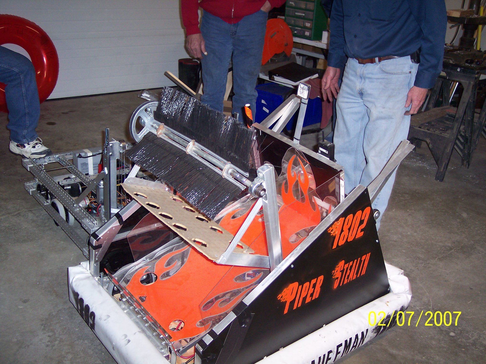

- Event
- Colorado Regional, Denver
- Qualification
- 3rd seed, 8-1-0
- Playoffs
- Quarterfinalist
- Robot
- Knight Hawk
- Sponsors
- Ewing Marion Kauffman Foundation; Piper High School Physics Club
- Highest Rookie Seed
It started in August 2005, when senior Evan Johnson wanted to take AP Physics and Piper didn't offer it. Physics and anatomy teacher Dr. Becky Knetter ("Dr. K") went looking for other ways to challenge students and found FIRST. That September she registered Team 1802 with 12 students, 6 mentors and a one-year $18,000 Kauffman Foundation grant, and FRC 1108 Panther Robotics from Paola High School mentored the rookies. In October the students chose the name Stealth, the motto Tempus Fugit, and orange and black as team colors instead of the school's purple, black and white. They named the rookie robot Knight Hawk. At kickoff in January 2006, four mentors traveled to New Hampshire while students watched the reveal on the NASA website. The team built a defensive robot that picked up balls and scored in the low goals, then road-tripped to Denver because Kansas City had no regional yet. Along the way, team member Mo pulled out his prayer mat at every stop and prayed for the team.
Events
- Colorado Regional, Denver (Mar 30–Apr 1): 3rd in qualifications, 8-1-0; lost quarterfinals 0-2; Highest Rookie Seed
People
- Founding coach
- Dr. Rebecca "Becky" Knetter
- Team
- 12 students and 6 mentors
- Class of 2006
- Evan Johnson, Aaron Dickson, Steven Dickson, Hannah Nusz, Paul Payton, Bryan Mesmier, William Verbanic